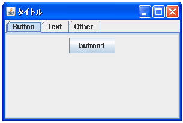
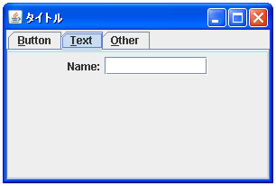

- Home ›
- Swing ›
- JTabbedPaneクラス
キーボードニーモニックを設定する
タブにキーボードニーモニックを設定する方法を確認します。キーボードニーモニックとはボタン毎に特定のキーを割り当てておいてそのキーが押されたらボタンがクリックされたのと同じ扱いをするものです。
タブにキーボードニーモニックを設定するにはJTabbedPaneクラスで用意されている「setMnemonicAt」メソッドを使います。
setMnemonicAt
public void setMnemonicAt(int tabIndex,
int mnemonic)
指定されたタブにアクセスするキーボードニーモニックを設定します。ニーモ
ニックは、Look & Feel のマウスを使用しない修飾子 (通常は Alt) と組み合
わせたときに、指定されたタブをアクティブにするキーです。
ニーモニックはキーボード上の 1 つのキーに対応している必要があり、
java.awt.event.KeyEvent で定義される VK_XXX キーコードのどれかを使用し
て指定します。大文字、小文字は区別されないため、対応するキーコードのキー
イベントは、Shift キーが押されているかどうかにかかわらず、ボタンを有効
化します。
これは、指定されたタブの表示されたニーモニックのプロパティーを更新しま
す。
パラメータ:
tabIndex - ニーモニックが参照するタブのインデックス
mnemonic - ニーモニックを表すキーコード
例外:
IndexOutOfBoundsException - tabIndex が 範囲外の場合
(tabIndex が 0 より小さい || tabIndex がタブの総数以上)
1番目の引数に選択したいタブのインデックスを指定します。インデックスはタブが追加された順に割り振られた番号で最初のタブのインデックスは「0」となります。存在しないインデックスを指定すると例外が発生します。
2番目の引数にはタブに設定したいキーを表す値を指定します。int型の値で指定しますが、指定できる値はjava.awt.event.KeyEventクラスで定義されています。キーボード上のキーに対応する値がほとんど定義されていますが数が非常に多いので数値とアルファベットだけご紹介します。
数値： KeyEvent.VK_0 から KeyEvent.VK_9 アルファベット： KeyEvent.VK_A から KeyEvent.VK_Z
例えば「KeyEvent.VK_N」を設定した場合、「ALT＋n」を押すとニーモニックが設定されたボタンが押された状態になります。(大文字小文字は関係ないので「ALT＋N」を押す必要はありません)。
実際の使い方は次のようになります。
JTabbedPane tabbedpane = new JTabbedPane();
tabbedpane.addTab("title1", new JButton("button1"));
tabbedpane.setMnemonicAt(0, KeyEvent.VK_B);
なお、ニーモニックに設定した文字がボタンの文字列に含まれている場合には、ボタンに表示されている文字列の該当の文字の下にアンダーバーが表示されます。またニーモニックに設定した文字がボタンに複数含まれている場合は、最初に現れた文字にだけアンダーバーが表示されます。
サンプルプログラム
では簡単なサンプルを作成して試してみます。
import javax.swing.*;
import java.awt.BorderLayout;
import java.awt.event.KeyEvent;
public class JTabbedPaneTest16 extends JFrame{
public static void main(String[] args){
JTabbedPaneTest16 frame = new JTabbedPaneTest16();
frame.setDefaultCloseOperation(JFrame.EXIT_ON_CLOSE);
frame.setBounds(10, 10, 300, 200);
frame.setTitle("タイトル");
frame.setVisible(true);
}
JTabbedPaneTest16(){
JTabbedPane tabbedpane = new JTabbedPane();
JPanel tabPanel1 = new JPanel();
tabPanel1.add(new JButton("button1"));
JPanel tabPanel2 = new JPanel();
tabPanel2.add(new JLabel("Name:"));
tabPanel2.add(new JTextField("", 10));
JPanel tabPanel3 = new JPanel();
tabPanel3.add(new JButton("button2"));
tabbedpane.addTab("Button", tabPanel1);
tabbedpane.addTab("Text", tabPanel2);
tabbedpane.addTab("Other", tabPanel3);
tabbedpane.setMnemonicAt(0, KeyEvent.VK_B);
tabbedpane.setMnemonicAt(1, KeyEvent.VK_T);
tabbedpane.setMnemonicAt(2, KeyEvent.VK_O);
getContentPane().add(tabbedpane, BorderLayout.CENTER);
}
}
上記をコンパイルした後で実行すると次のように表示されます。

タブには左から順に「B」「T」「O」の各キーに対してキーボードニーモニックが設定されています。キーボードニーモニックに設定した文字がタブに表示されている文字列の中に含まれている場合はその文字の下にアンダーバーが表示されます。
では「ALT＋t」を押して下さい。

キーボードニーモニックとして「T」キーが割り当てられている2番目のタブが選択されます。
( Written by Tatsuo Ikura )

著者 / TATSUO IKURA
初心者～中級者の方を対象としたプログラミング方法や開発環境の構築の解説を行うサイトの運営を行っています。